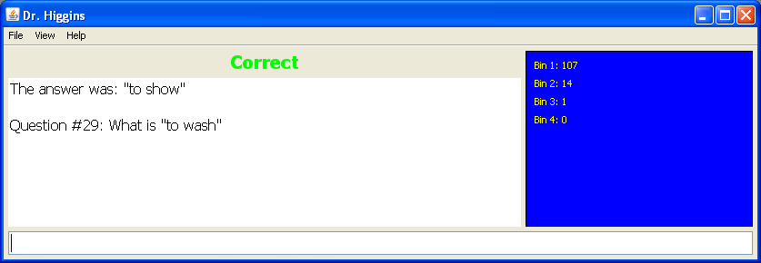
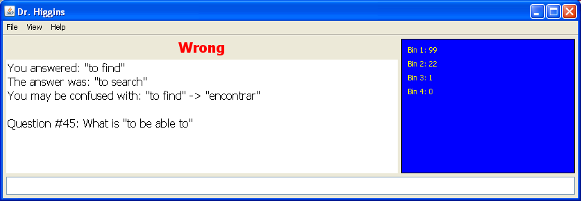
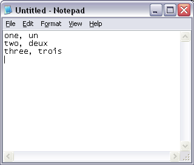

In the famous musical "my fair lady" Professor Higgins was the professor who tried to teach proper english to Eliza Doolittle. Like in the movie, Dr. Higgins will teach you and help you teach yourself any language you like.
The program is extremely useful for improving your vocabulary of a foreing language. It works like a quiz, the program asks you what the translation of a certain word is and you have to type it in. The program will tell you if you are right or wrong and will keep score for you.
There is more. As any good teacher knows, the key to learning is repetition. When you don't remember the answer, Dr. Higgins will keep repeating the question every few turns until you get it right two times in a row. Moreover, by default each question is asked at least four times before the quiz ends. This may sound boring, but trust me, it works very well. Usually four repetitions is enough to learn any unfamiliar piece of vocabulary completely by heart in a matter of a few hours.
This program is meant as help with self-study. It might also prove useful for high-school students who are studying for a vocabulary test or exam.
When you launch the program, no quiz has been loaded yet. You can start a quiz simply by selecting File->New from the menu.

The program comes with a number of quizzes for self-study in different languages. Select one of these quizzes to start. If you need to study a specific list of words, or if you're studying a language that is not available, you need to create your own quiz first. See below for information on how to do that.
The first question is picked randomly from the quiz and is asked to you, you need to type in the answer completely, without spelling errors.
On the right side you see four bins (the number of bins can be changed), each bin contains a number of questions. At the start of the quiz, all questions are in bin #1. Each time you answer a question correctly, it is moved to the next bin. Once all questions are in the last bin, the quiz ends.
If you make a mistake however, the question is repeated and doesn't move into the next bin until you answer it correctly 2 times in a row. With this extra repetition you learn quickly from your mistakes.
It can sometimes happen that you get confused with two very similar questions. For example, in a spanish quiz you can easily confuse nuevo (new) with nueve (nine). When you answer "neuve" to the question "What is "new" in spanish?", the program will not only tell you that the answer is wrong, but also warn you that you mix up two words. This feature will help you to distinguish confusing words more quickly.
Because of all the repetition a quiz can take a while to complete. The program remembers where you were when you close the program, so it is safe to stop at any time and resume at a later moment where you left off. Simply select File->Exit from the menu to stop. If you stopped at question #75, the next time you start you will be greeted with question #76.
When the quiz ends, you get a window with a list of questions that you found most difficult, in which you made the most mistakes. You can note down this list for extra rehearsal.
Dr. Higgins keeps a log of which lessons you study and how long it takes. This way you can keep track of what you've done, and you may set targets for yourself, e.g. to study two hours per week. In the log you can see if you manage to keep your resolutions.
In the menu File->Options you can override the number of bins for the current quiz. For example, if you already studied the current quiz before and you're merely refreshing your memory, repeating every word four times may be overkill. In those cases you can reduce the number of bins to 3 or 2. (At this time this is the only option available in the options menu, this may change in the future)
Would you like to study a certain language but Dr. Higgins doesn't have suitable word lists? No problem! You can easily make your own.
Do you have to study all the words on page 23 of your text book for a test? Simply add them to Dr. Higgins and you'll have them memorized before dinner.
So how do you add word lists? It's very simple. Open up notepad or a similar text editing program, and type in the word - translation pairs separated by a comma, only one pair per line. When you're done, simply save them in the "lessons" subdirectory of Dr. Higgins, and you can open the new lesson from withing Dr. Higgins. You have to use the filename extension "txt" (which is the default extension in notepad).
Note that if you use e.g. Microsoft Word or a similar word processor, you need to make sure that you save as text only (*.txt) format.
Dr. Higgins is fairly forgiving in mistakes you may make, but do pay attention to this: Never use more than one comma in a line. The program looks for a comma to find out where the word ends and the translation begins. If you use more than one comma, or if you use no comma at all, the program may get confused.
When you load a lesson that you've made yourself, Dr. Higgins will scan the file and look for certain kinds of inconsistencies. It will ignore those lines containing inconsistencies and run the quiz anyway, but you may want to note them down and look back at them in order to fix the problem.
One of the inconsistencies that will give you a warning is forgetting a comma in a line. Another one is using the same word more than once. For example:
ser, to be tener, to have comer, to eat estar, to be
In this list there are two entries for "to be". This would be very annoying because if the program asks you "to be" there is no way to know if the right answer is "ser" or "estar". You may answer ser and be right only 50% of the times.
Whenever this situation occurs, I recommend you put both options on the same line, like so:
ser / estar, to be tener, to have comer, to eat
This way has the disadvantage that now you always have to give both answers together when the program asks you the translation for "to be". However, synonyms do occur a lot and this is just a fact of life, so you might as well find a way to deal with it.
It's no problem to have a few empty lines in the file. Also, you can add comments by using the "#" character. If a line starts with #, it will be ignored by the program, for example:
# Spanish words from the textbook page 23. # by Peter # here are some verbs ser / estar, to be tener, to have comer, to eat # some nouns el restaurante, the restaurant el coche, the car
There are a few more tricks you can do with lesson files. You may add some extra properties like so:
#question1=What is "" in Dutch? #question2=What is "" in English? #encoding=ISO8859-1 #askbothways=1 #bins=3 kind, child vader, father vriendelijk, kind gierig, greedy
Dr. Higgins normally asks you something like "What is xxx", where xxx is one of the words in the lesson. By using the properties "question1" and "question2", you may override this question by something you make up, in this case the question would be eiter "What is xxx in Dutch" or "What is xxx in English". This can be useful, especially in this case, otherwise there would be no way to see if Dr. Higgins is asking for the Dutch translation of the English word kind (vriendelijk) or the English translation of the Dutch word kind (child).
The property "askbothways" may be set to 0 to force the program to use the part before the comma as question only (never as answer) and the part after the comma as answer only. This may be useful in cases where you want to e.g. test yourself with conjugations or plurals. Alternatively, you could use this feature to enter e.g. country, capital pairs and quiz yourself for the capitals.
The property "encoding" can be used to specify the character encoding of the lesson. The default encoding (ISO8859-1) is suitable for all west-european languages including spanish, french, german, dutch and english. You only need to worry about this property when dealing with special character sets such as japanese or russian. A suitable encoding that works for nearly any lanugage is UTF-8.
Finally, you may use the property bins to set the default number of bins for this quiz. If you leave it out, the default is 4. This may be useful for really long and easy quizes, where you can do with less repetition.
Of course, all these properties are optional. All you really need is a list of word pairs and you're ready to go! It's easy as that.
Dr. Higgins is a tool that helps you to learn a language. But this program by itself can never be a replacement for a complete language course. It can help you improve vocabulary rapidly, and can help with learning conjugations of irregular verbs. But it will never be able to teach you grammar and pronunciation.
Even if you rely only on self-study, there are many other things you can (and should) do at home. Here are a few tips:
Copyright 2004-2009 Martijn van Iersel. This software is published under the General Public License (GPL) version 3 or higher. See COPYING.txt for details.
In short, that means that Dr. Higgins is free software. You are allowed to use it and redistribute it.
The same license applies to the accompanying lessons. If you like this program and if you have created word lists for a new language or if you have improved current word lists, please consider sending them back to me so I can add them to the package, and others can make use of them as well.
You can contact me at amarillion@yahoo.com. The official Dr. Higgins website is at http://www.helixsoft.nl/project_page.php?file_name=higgins.proj